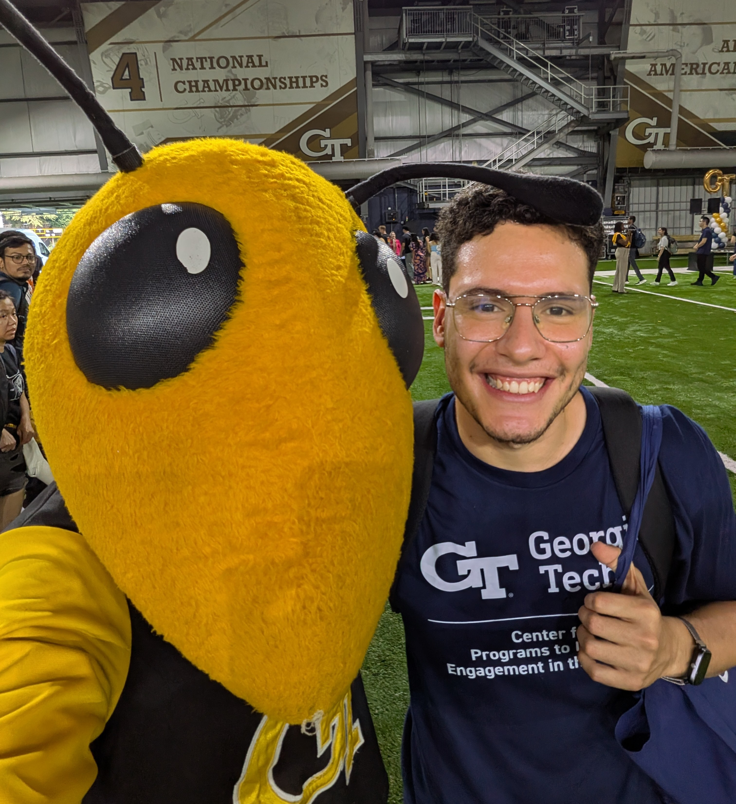

I am a second-year PhD student in Mathematics at the Georgia Institute of Technology.
My areas of interest are analysis and applied mathematics, and recently probability.
Mathematician and Mechanical Engineer from Universidad de los Andes (Colombia) with a master's degree from the same university.
We study Calderón's inverse problem: to recover \(p\) in the expression \(-\text{div}(p\nabla u) = 0\) from information about the solutions. Given sufficient measurements on the boundary (in the form of the Dirichlet-to-Neumann operator), it is known that there exists a unique associated \(p\), but recovering it is an ill-posed problem in the sense of Hadamard. This thesis addresses the problem using neural operators alongside classical methods while exploring what additional information can be used as input data (e.g., the Weyl function). A comparison of the discussed methods is presented, and the first implementation of a recent method based on semi-definite optimization that solves the problem under additional regularity assumptions on \(p\).
This project is a Julia implementation of a parallel regularized k-means algorithm.
In this project we study quadratic pencils, that is, second order polynomials with linear operators as coefficients. We investigate their spectrum and present some of their applications. The document consists of two parts: the first one is about the localization of the spectrum of a special type of pencils under some additional assumptions and the second shows a factorization theorem for weakly hyperbolic pencils.
Implementation of spectral clustering to the graph associated with a vehicle routing problem for reducing the computational cost of finding solutions with a meta-heuristic.
| Fall 2026 | Teaching Assistant for MATH 1552 |
|---|---|
| Summer 2026 | Lecture Assistant for MATH 6701 |
| Spring 2026 | Teaching Assistant for MATH 1553 |
| Fall 2025 | Lecture Assistant for MATH 2106 |
| Office | Skiles 140 |
|---|---|
| jvillaquira3@gatech.edu | |
| MathLab Hours | Thursdays 1-2pm |